J
J1:
Shenleybury Cottages,
Shenleybury
INSPECTOR MORSE: Who Killed Harry Field? (Colin
Gregg: 1990)
Sergeant Lewis (Kevin Whately) discovers Jane
Marriot (Nicola Cowper)
at number 32 after some detective work and calls in Morse (John
Thaw).
J2: St. Botolph's Church
(Disused), Black Lion Hill, Shenleybury
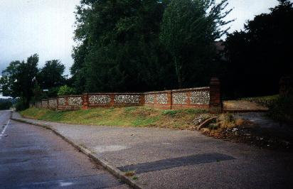
THE AVENGERS: How to Succeed ... at
Murder (Don Leaver: February 1966)
Steed (Patrick Macnee) follows Henry (Artto
Norris) to a church yard
and watches as he tends his wife's grave.
JOURNEY TO THE UNKNOWN: Paper Dolls (James
Hill: 1968)
Craig Miller (Michael Tolan) arrives with Jill
Collins (Nanette Newman)
and Bart Brereton (John Welsh) in his car at Hayden
Parish Church. They
talk to the Vicar (George Benson) about the
Gregorys' son.
RETURN OF THE SAINT
Title Sequence
The Saint jumps over a low wall while being chased by a thug.
INSPECTOR MORSE: Fat Chance (Roy
Battersby: 1990)
After Morse (John Thaw) parks his Jaguar so that he
and Lewis (Kevin
Whately) can discuss the case, he drives off leaving Lewis
stranded.
Film:
TO THE DEVIL A DAUGHTER
(1976)
J3: Packhorse Lane/Mimms
Lane Junction nr. Ridge

Rabley Park
THE SAINT: The Crooked Ring (Leslie
Norman: February: 1965)
Simon and Steve Nelson go jogging along Mimms Lane (across
Catharine
Bourne Ford) followed by Connie Grady in Simon's Volvo. They
are passed
by a car driven by Max who turns around at the Packhorse Lane junction
and races back up Mimms Lane in an attempt to run Simon and Steve over
The two men jump out of the way and the car narrowly misses the Volvo
and runs into the verge.
THE AVENGERS: Room Without A View (Roy
Baker:
April 1965)
Steed and Mrs Peel arrive at the home of Doctor Wadkin (Rabley
Willow)
to investigate his mysterious reappearance. Later a delivery van for
the Canton Chinese Laundry arrives and the deliverymen kidnap Doctor
Wadkin.
THE AVENGERS: The House That Jack Built (Don
Leaver: January 1966)
Steeds sets off in his Bentley to investigate what exactly Mrs Peel has
got herself into (drives along Packhorse Lane past Rabley
Willow then
down Mimms Lane over the Catharine Bourne Ford).
(Identified by Geoff Dodd, August 2008)
THE BARON: The Killing (Cyril
Frankel:
February 1966)
John Mannering and Morgan Travis dive to the Tower of London from The
Gables, while Selina drives straight to the flat (along Mimms
Lane
across the packhorse Lane Junction).
THE AVENGERS: From Venus With Love (Robert
Day: October 1966)
Mrs Peel (Diana Rigg) chases after the light source
in her Lotus (along
Mimms Lane towards Deeves Hall).
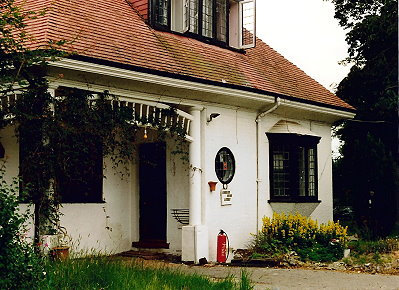
Rabley Park Lodge
THE AVENGERS: The Hidden Tiger (Sidney
Hayers: January 1967)
Bellamy (Reg Pritchard) is attacked at his cottage (Rabley
Park Lodge)
by something and is later found dead by Steed (Patrick Macnee)
when he
arrives in his Bentley.
THE CHAMPIONS: The Fanatics (John
Gilling 1967)
Craig (Stuart Damon) and Sharron (Alexandra
Bastedo) drive
around searching for Richard in Sharron's Vauxhall Cresta.
THE AVENGERS: The Joker (Sidney
Hayers: April
1967)
Emma Peel drives her Lotus through Devonshire towards the home of the
bridge expert, Sir Cavalier Rousicana (Mimms Lane past Rabley
Park).
Emma Peel arrives at the estate of Sir Cavalier and drives her Lotus
over a (Rabley Park grounds). Later a mysterious
figure in a dinner
suit is observed looking up at the house.
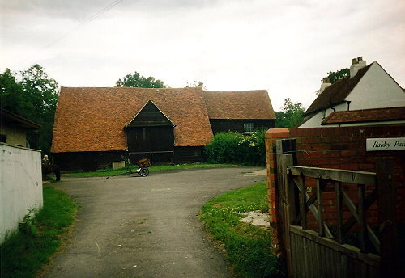
Rabley Park Farm
THE AVENGERS: Dead Man's Treasure (Sidney
Hayers: July 1967)
Mrs Peel arrives with Mike at Tree Top Farm (Rabley Park Farm),
Bates
(Ivor Dean) follows them into the barn. As Mrs Peel
leaves in Mike's
Mercedes, Steed and Penny arrive in Steed's Bentley.
THE AVENGERS: You Have Just Been Murdered
(Robert Asher: July 1967)
Emma in her Lotus follows Rathbone in his car after he has picked up
the money to pay his ransom. He drives down Packhorse Lane and turns
into a gateway after Rabley Park Farm towards Bridge Farm. Later Steed
in his Bentley follows Unwin along the same route.
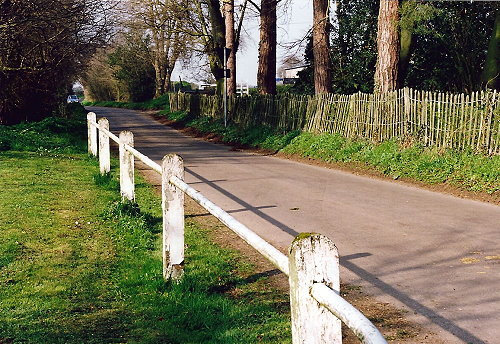
Packhorse Lane
THE AVENGERS: Mission ... Highly Improbable
(Robert Day: August 1967)
Shaffer (Ronald Radd) sees the shrinking ray
demonstrated at his house
(Rabley Park) by Chivers (Francis Matthews)
with Susan (Jane Merrow)
and Professor Rushton (Noel Howlett).
THE SAINT: Legacy for the Saint (Roy
Ward
Baker: Spring 1968)
The security van with Teal and the gold aboard races down Mimms Lane as
they brace themselves for the villain's attack.
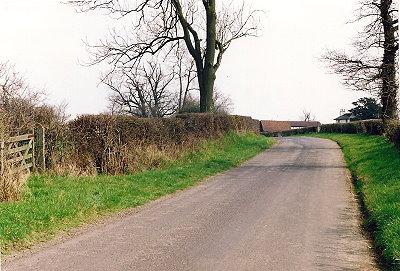
Mimms Lane looking East to Ravenscroft Farm
THE AVENGERS: All Done With Mirrors (Ray
Austin: May 1968)
Tara (Linda Thorson) arrives at the home of
Williams (Rabley Park) to
encounter the huge Gozzo, whom she fights until he is impaled on a rake.
THE SAINT: Where the Money Is (Roger
Moore: Summer 1968)
Simon Templar (Roger Moore) is driven past Rabley
Willow by the
kidnappers and his wristwatch camera photographs the house. Later he is
able to find his way back to the house.
THE AVENGERS: Thingumajig (Leslie
Norman:
January 1969)
Kruger's caravan is parked up at the side of the road (Mimms
Lane
looking towards Deeves Hall Farm).
(Identified by Andy Lawrence, February, 2010)
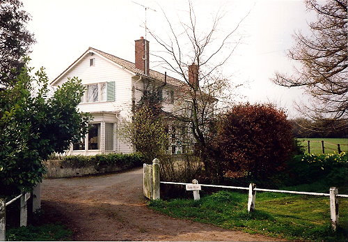
Rabley Willow
THE ADVENTURER: Skeleton in the Cupboard (Cyril
Frankel)
Gene Bradley (Gene Barry) goes to visit Karen
Ballard (Sylvia Simms) at
the home (Rabley Willow) she shared with her
husband. After leaving
Gene passes another which is just car arriving. Gene leaves his car (on
Packhorse Lane) and sets off on foot to investigate. He is
confronted
at the house by Karen Ballard.
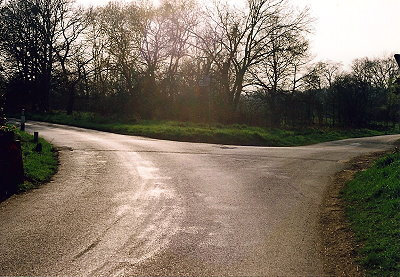
Mimms Lane/Packhorse Lane Junction
THE PROTECTORS: Baubles, Bangles and Beads
(Jeremy Summers: 1973)
On the way to exchange money for stolen gems the Contessa (Nyree
Dawn
Porter) in a taxi passes the junction.
THE PROTECTORS: Zeke's Blues (Jeremy
Summers:
1973)
Harry Rule drives his car along Packhorse Lane and up Mimms Lane on his
way to Bradley's. He is followed by Kasankas and Fred in their car.
Later the Contessa and Zeke drive along the same route on their way to
warn Harry.
J4: Ridge Hill Farm,
Rectory Lane, Shenley
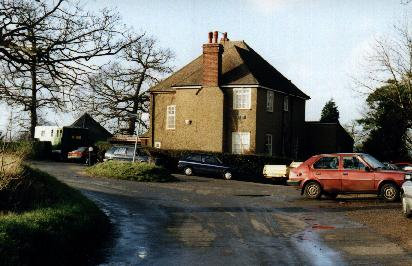
H. G. WELLS' INVISIBLE MAN:
Shadow Bomb (Quentin
Lawrence: 1959)
Brady drives his Austin Healy 3000 towards the junction and races down
the hill in order to get to Finch in time.
THE AVENGERS: The House That Jack Built (Don
Leaver: January 1966)
Mrs Peel sets off on her journey in her Lotus Elan passing a house
which is for sale (now demolished). She follows the
sign to 'Seven
Pines' after picking up the scout master; as they drive along the
narrow lane a 'road closed' sign appears behind them. Steed (Patrick
Macnee) drives his Bentley up to the junction and follows the
sign for
'Seven Pines' driving past the closed road. He returns after he fails
to find the house and backs his car into a field before smashing
through the 'Road Closed' barrier. The tyres of the Bentley are slashed
by an automatic system in the lane and Steed continues on foot. After a
while Steed peers over a hedge and, seeing the house, enters a field.
THE AVENGERS: Dead Man's Treasure (Sidney
Hayers: June 1967)
Alex and Carl drive past the junction. Later they are followed by Mrs.
Peel and Mike who take the turning to Shenley Lodge.
(Spotted by Michael Richardson, 1989)
THE AVENGERS: Murdersville (Robert
Asher:
August 1967)
Hubert (John Ronane) and Mickle (Colin
Blakely) pursue Mrs
Peel (Dianna Rigg/ Cyd Child) in their helicopter (F-BNKZ
aka G-AVEE)
and eventually run her to ground.
(Spotted by Michael Richardson, June 2012)
RANDALL AND HOPKIRK [DECEASED]:
The Smile Behind the Veil
(Jeremy Summers: Autumn 1968)
Jeff's Vauxhall is followed past the junction by Seaton as he makes his
way to Dyson's farm.
J5: Shenley Lodge, Rectory
Lane, Shenley
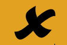
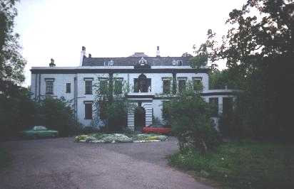
THE AVENGERS: The House That Jack Built (Don
Leaver: January 1966)
Burton (Griffith Davies) evades the hunting
authorities and breaks into
the abandoned house. Mrs Peel drops off Withers at the gateway to the
estate (stable gates) before driving on in her
Lotus Elan. Later she
arrives at the house.
THE AVENGERS: The See-Through Man (Robert
Asher: November 1966)
Steed's Bentley visits the home of Ernest Quilby where a sign warns
'Enter At Your Own Risk'.
THE CHAMPIONS: The Fanatics (John
Gilling:
July 1967)
Craig and Sharron's Vauxhall Cresta hurtles up to the house which
Croft's organisation uses as headquarters.
JASON KING: A Red, Red Rose Forever (Cyril
Frankel: 1971)
By threatening Anne Winters, Jason is taken by Doctor Claudel, to the
Clinique Claudel in Geneva and is forced to shoot Professor D'Arblay
when he visits the establishment. Later the Swiss Police arrive to
arrest the conspirators.
THE PROTECTORS: Dragon Chase (Charles
Crichton:
1973)
Paul (Tony Anholt) and the Contessa (Nyree
Dawn Porter) follow Lockier
in their car when he leaves home. Later Nickolai (William
Dexter) is
collected by car.
INSPECTOR MORSE: Second Time Around (Paul
Wheeler: 1990)
Chief Inspector Morse (John Thaw) and Sergeant
Lewis (Kevin Whately) go
to visit Mrs. Lapsley at Cumberland House nursing home.
Film:
A CLOCKWORK ORANGE
(1971)
J6: The A6(T)
(now the
B556)/Rectory Lane Junction, Ridge Hill, Shenley

THE SAINT: The Chequered Flag
(Leslie Norman: February 1965)
Beau Ellington watches as Simon leaves the test track, in his Volvo, on
his way to find Hunter after Simon's crash at Brands Hatch (from
The
Waggon and Horses and Redwell Wood Farm to the junction).
THE PRISONER: The Girl Who Was Death (David
Tomblin: November 1967)
The secret agent's Lotus Elan pursues 'Death's Jaguar under the
A6(T)/A111 junction bridge (now demolished)
heading towards South
Mimms. Then they are seen turning off the A6(T) up
towards Rectory Lane.
RANDALL AND HOPKIRK [DECEASED]:
A Sentimental Journey
(Leslie Norman: July 1968)
The Limousine driven by Dandy Garrison comes down Rectory Lane onto the
A6(T).
JOURNEY TO THE UNKNOWN: Poor Butterfly (Alan
Gibson:
Alan Gibson: October 1968)
Steven Miller (Chad Everett) drives his 1929
Bugatti off the main road
towards Sir Robert Sawyer’s party.
THE PROTECTORS: Dragon Chase (Charles
Crichton:
1973)
Paul (Tony Anholt) and the Contessa (Nyree
Dawn Porter) follow Devlin
(Kenneth Colley) to a meeting with a KGB agent (Richard
Marner).
Film:
THE MONSTER CLUB
(1981)
J7: House opposite Shenley
Hall exit gates, Rectory Lane, Shenley

H. G. WELLS' INVISIBLE MAN:
Secret Experiment
(Pennington Richards: 1958)
Peter Brady arrives at his house in his sports car. An invisible Brady
walks out of the house to where Diane (Lisa Daniely)
is waiting for him
in the Austin Healy 3000.
H. G. WELLS' INVISIBLE MAN:
The Locked Room
(Pennington Richards: 1958)
Sally (Deborah Watling), Diane (Lisa
Daniely) and Peter Brady wave
goodbye to Tania (Zena Marshall) as she gets into a
car sent for her
and is driven off.
H. G. WELLS' INVISIBLE MAN:
Strange Partners
(Pennington Richards: 1958)
Brady's house is broken into.
H. G. WELLS' INVISIBLE MAN:
Picnic with Death
(Pennington Richards: 1958)
Sally (Deborah Watling) and her friend, Linda
Norton (Margaret
McCourt), ride over to Peter Brady's house.
H. G. WELLS' INVISIBLE MAN:
Behind the Mask
(Pennington Richards: 1958)
Establishing shot of Brady's house.
H. G. WELLS' INVISIBLE MAN:
Blind Justice
(Pennington Richards: 1958)
An invisible Peter Brady is mowing the lawn outside his house when he
is called in by Diane (Lisa Daniely) to answer a
telephone call.
H. G. WELLS' INVISIBLE MAN:
Jailbreak (Pennington
Richards: 1958)
Establishing shots of Peter Brady's house.
H. G. WELLS' INVISIBLE MAN:
Bank Raid (Ralph
Smart:
1958)
Williams (Brian Rawlinson) watches Peter Brady's
house from the
driveway opposite. Diane (Lisa Daniely) sees Sally (Deborah
Watling) to
Mr Bruce's car who is waiting to take her to school. Mr. Bruce drives
away with Sally and Williams follows.
H. G. WELLS' INVISIBLE MAN:
Point of Destruction
(Quentin Lawrence: 1959)
Sally (Deborah Watling) and Diane (Lisa
Daniely) drive off in Dee's car
watched by Stefan and Katrina. After Stefan fails to kill Brady, the
Invisible Man dashes to his car and drives off.
H. G. WELLS' INVISIBLE MAN:
Man in Disguise
(Quentin Lawrence, Peter Maxwell: 1959)
Brady discovers a bomb in his car (parked by the farm next
door) and
sends Sally (Deborah Watling) back into the house.
Later they both
drive off and are followed by a pair of villains.
H. G. WELLS' INVISIBLE MAN:
The Rocket (Quentin
Lawrence: 1959)
Establishing shot of Brady's home.
J8: Grassfield Farm,
Rectory Lane, Shenley
RANDALL AND HOPKIRK [DECEASED]:
The Smile Behind the Veil
(Jeremy Summers: Autumn 1968)
Looking for Gouldhurst Jeff drives his Vauxhall past the farm.
J9: Keepers Cottage,
Rectory Lane, Ridge Hill
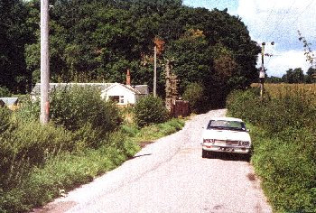
THE SAINT: Where the Money Is (Roger
Moore: Summer 1968)
Simon Templar is driven to see the kidnapped girl and passes the
cottage on the way.
RANDALL AND HOPKIRK [DECEASED]:
The Smile Behind the Veil
(Jeremy Summers: Autumn 1968)
Jeff passes the cottage in his Vauxhall on the way to Gouldhurst.
J10: All Saints Pastoral
Centre, Shenley Lane, London Colney

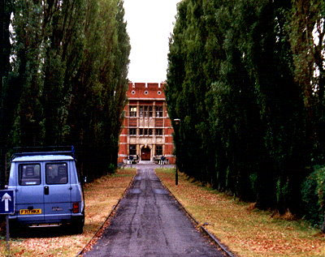
(photo: Geoff Dodd, 2021)
RETURN OF THE SAINT: The Poppy Chain
(Charles Crighton: 1977)
Simon (Ian Ogilvy) and Jenny Platt (Jenny Hanley)
are at the hospital
wairing for news about Jenny's sister. They get bad news just as
General Platt (Laurence Naismith) arrives.
(Spotted by Geoff Dodd, October 2023)
RETURN OF THE SAINT: Collision Course Part One: The Brave Goose
(Cyril Frankel: 1978)
Simon (Ian Ogilvy) attends the coroner's court for
the inquest in to
the death of Oscar West. After the hearing Simon leaves with Vic
(Prentis Hancock) through a throng of reporters.
Simon tells the
chauffeur waiting for Annabel West (Gayle Hunnicutt)
to go to the rear
of the building so he can take her home when she exits the court.
THE PROFESSIONALS: The
Acorn Syndrome
(Martin Campbell: September 1979)
Bodey (Martin Shaw) and Doyle (Lewis
Collins) go to see Copeland (Ronald Hines) at his daughter's school.
Film:
SPECTRE (1977)
A GHOST AT MONTE CARLO
(1990)
Television:
WIDOWS (1983)
J11: Rainbow Garage, North
Orbital Road, London Colney (partly demolished, Follett Audi
Spares)

Photo: Geoff Dodd
THE PROTECTORS: Triple Cross (John
Hough: 1971)
On his way to the airport Harry Rule (Robert Vaughn)
stops off for
petrol at a petrol station (Rainbow Garage). While
he chats with the
pump attendant (Bill Stewart) a couple of
hitchhikers are dropped off.
They make their way over to Harry, and Linda (Angharad Rees)
asks for a
lift to London.
(Spotted by Geoff Dodd, January 2007)
J12: Harper Lane, Radlett
GIDEON’S WAY: Boy With Gun (Jeremy
Summers:
May 1965)
View across the countryside to nearby railway after Chris Kirk spends
the night sleeping in a stack of hay before setting off again.
(Identified by Alan Field, September 2007)
J13: The Wagon and Horses,
Saint Albans Road, Ridge Hill (now under the M25)
JOURNEY TO THE UNKNOWN: Paper Dolls (James
Hill: 1968)
Craig Miller (Michael Tolan), Bart Brereton (John
Welsh) and Jill
Collins (Nanette Newman) arrive at the Waggon and
Horses and ask Mayhew
(Jerold Wells) the way to Wortley Ridge.
(Identified by Bob Rocca, July 2008)
J14: Willow Farm, Coursers
Road, Bowmansgreen
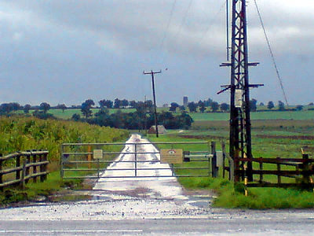
photo: Geoff Dodd
THE AVENGERS: Silent Dust (Roy
Baker: June
1965)
Steed (Patrick Macnee) arrives with the Minister (Hilary
Wontner) at
Manderley to witness the devastation first hand.
(Identified by Geoff Dodd, September 2008)
J15: RSPCA Southridge
Animal Centre, Packhorse Lane
THE AVENGERS: From Venus With Love (Robert
Day: October 1966)
Mrs Peel (Diana Rigg) loses the strange light after
attempting to
follow it in her Lotus. See sees a light source in a farm opposite and
sets off on foot to investigate. She arrives at the farm looking for
the strange light but as she investigates a barn she sees the light
suddenly moves away.
J16: A1081, London Colney
By Pass
THE PRISONER: Do Not Forsake Me Oh My Darling
(Pat Jackson: August 1967)
Number 6 is being followed from London to Dover by Potter in his car.
Potter radios in to confirm Number 6's destination (back
projection
seen from Potter's car).
(Identified with the Help of Alan Field, October 2010)
J17: Bell Lane Sand Pit,
London Colney (restored to fields and partly covered by M25)
THE AVENGERS: Mission ... Highly Improbable
(Robert Day: August 1967)
Colonel Drew (Richard Leech), Shaffer (Ronald
Radd), Susan Rushton
(Jane Merrow) and John Steed (Patrick
Macnee) are all present to watch
the demonstration on the MK39 armoured car (an FV603 Saracen
armoured
personnel carrier).
(Identified by Alan Field, March 2011)
J18:
Bell Lane, London
Colney
THE AVENGERS: False Witness (Charles
Crichton: June 1968)
Melville (Barry Warren) climbs the stairs of
Mother's (Patrick Newell)
double decker bus HQ and arrives on the top deck. Steed (Patrick
Macnee), Mother and Rhonda (Rhonda Parker)
are there to listen to his
report. Later, Steed discusses Melville with Mother. Mother suggests
Steed doubles up with Melville in order to find out why he is lying.
After Steed has left the bus Tara (Linda Thorson)
takes a drink from
Rhonda and gives it to Mother. Mother suggests Tara investigates
Plummer.
(Identified by Alan Field on the Britmovie Forum, August 2012)
J19: Pinks Hotel, Rectory Lane (redeveloped
as houses)
THE BARON: Portrait of Louisa (John
Moxey: September 1965)
Louisa drives her Jaguar to Peter Langley's home, Barnsmore Cottage.
Later John Mannering arrives in his Jensen to question Peter, but Peter
is shot before he can talk.
(Identified by Geoff Dodd, April 2023)
Film:
SMALL HOTEL (1957)
To K